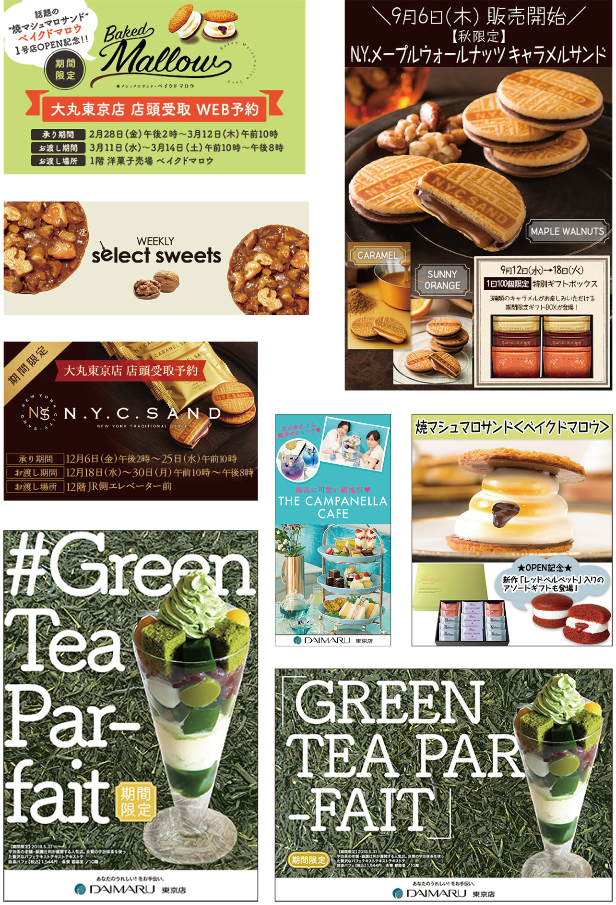
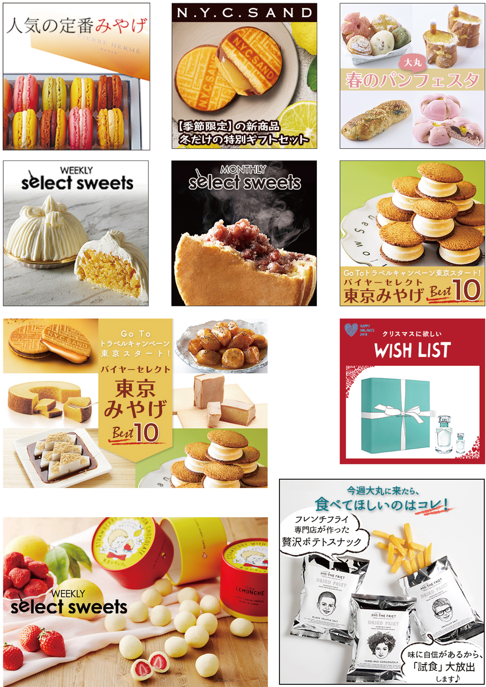

Jan.2018--Jan.2021
百貨店バナーなど
CMS(MovableType)とFTPで大丸東京店のサイトの表示の運用管理及びWEB関連問合せや緊急対応。コンテンツの作成。SNS画像作成、メルマガテスト配信など。
https://www.daimaru.co.jp/tokyo/
現状、担当コンテンツはCMSでの作成になっています。過去静的ページ以下など。
https://www.daimaru.co.jp/tokyo/hoppetown_sweets/
様々なサイズや画角、クオリティの画像が支給される中、ページ内で一定のクオリティーを保つため、レタッチや背景の作成、
湯気など効果の追加など、自然に見えることを心掛けました。

